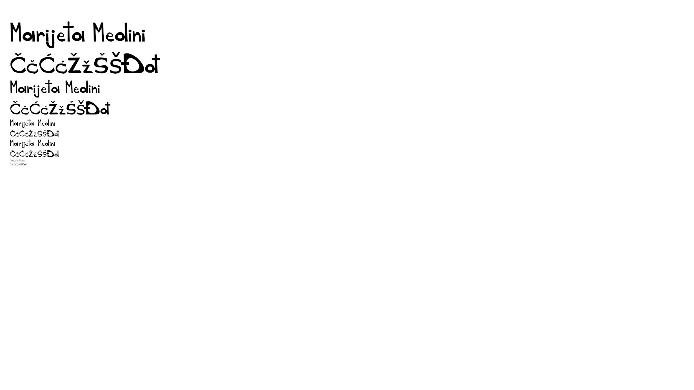
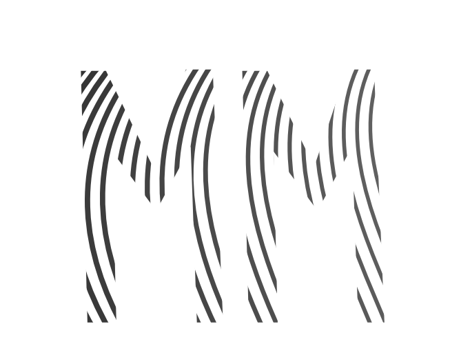
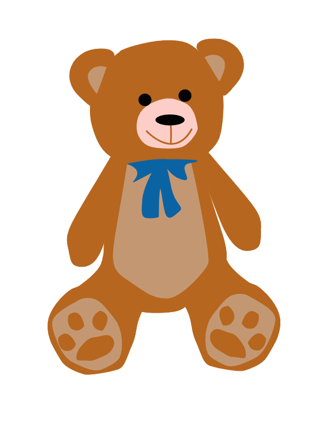
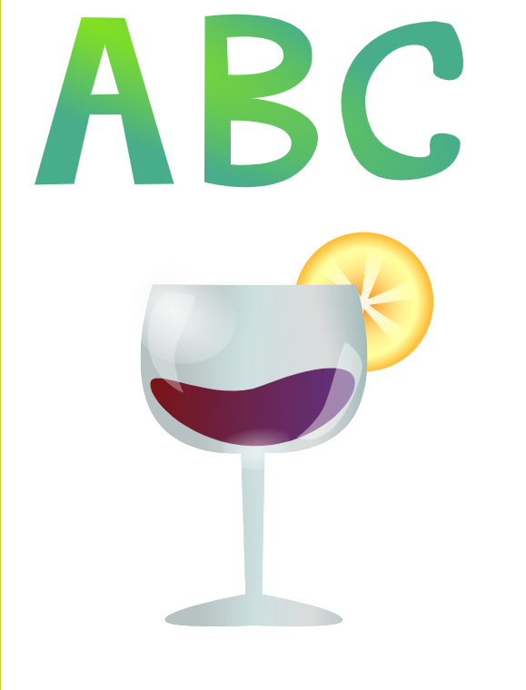
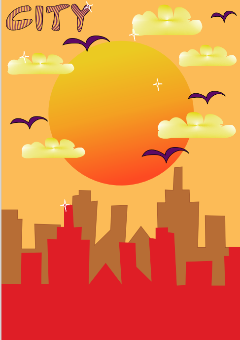
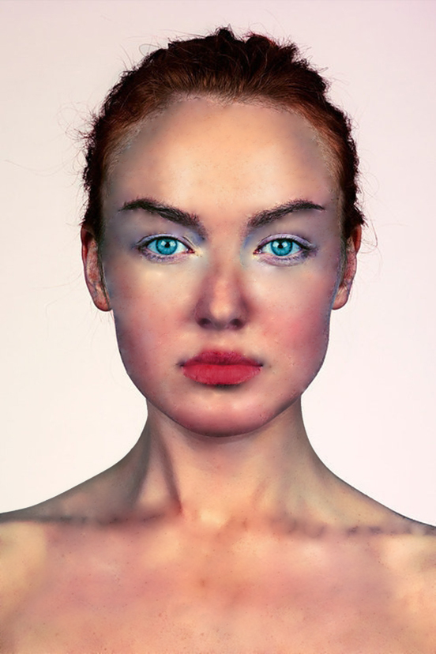
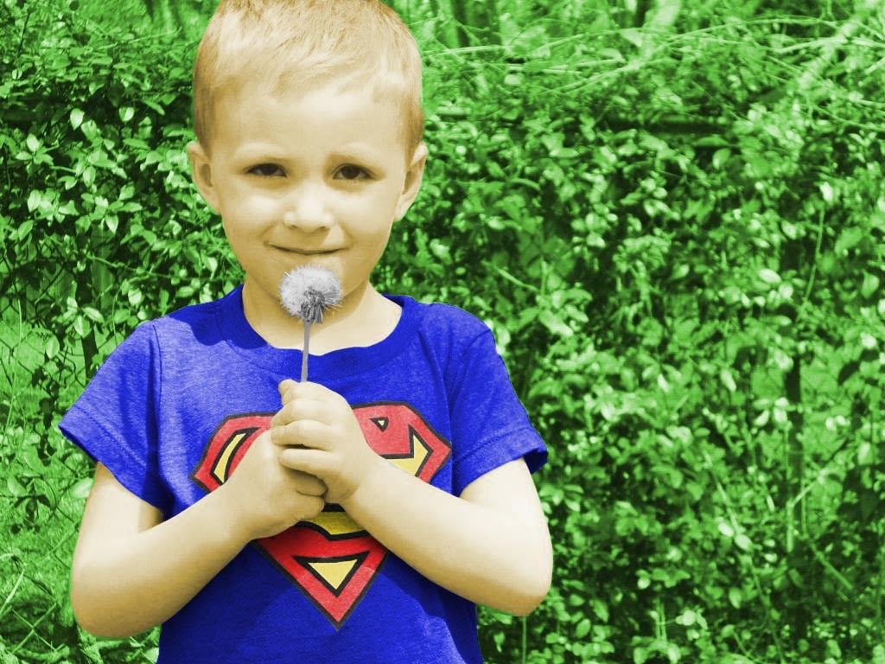
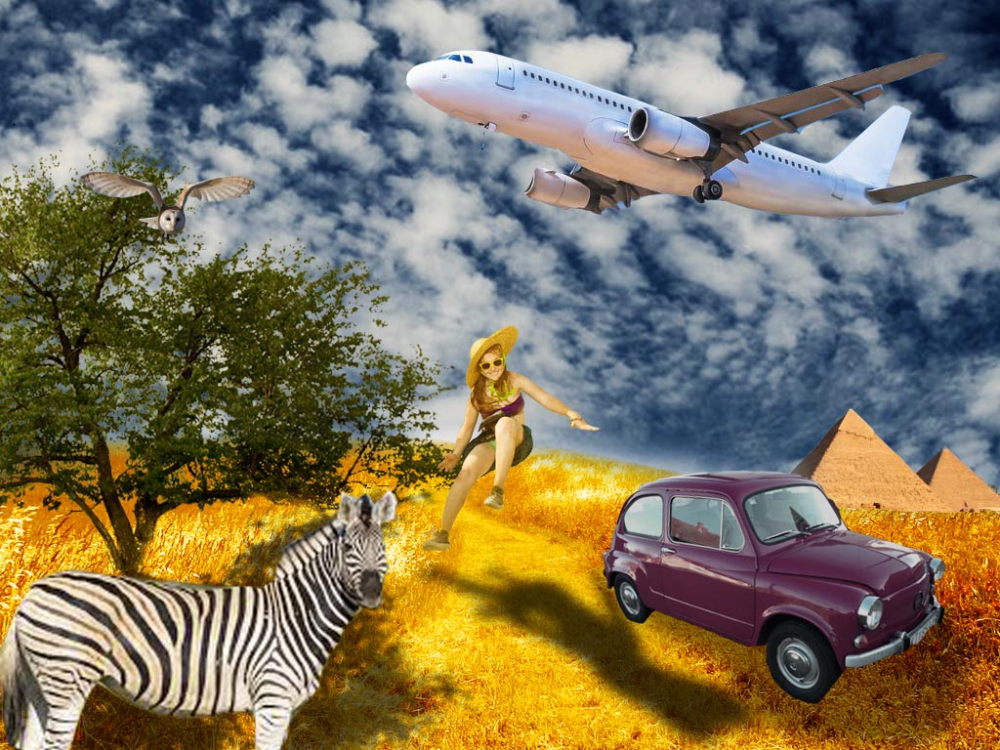
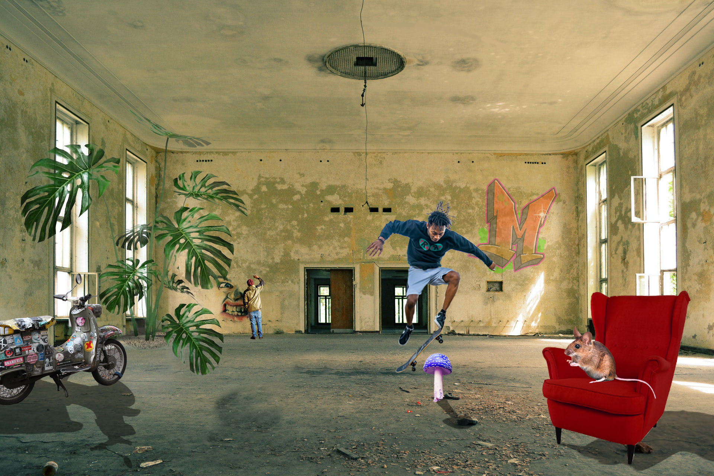

Vježba 1
Vježba 1.- dizajniranje fonta u programima Fontographer ili FontForge.

Vježba 2
Vježba 2.- izrada maske i Bezierove krivulje u programu Adobe Illustrator.

Vježba 3
Vježba 3.- crtanje krivulja prema predlošku u Illustratoru.

Vježba 4
Vježba 4.- korištenje alata Gradient i Mesh Gradient.

Kolokviji 1
Tehnike iz predhodnih vježba u cijelini.

Vježba 5
Vježba 5.- retuširanje u Adobe Photoshopu.

Vježba 6
Vježba 6.- koloriranje selekcije fotografije.

Vježba 7
Vježba 7.- fotomontaža, selekcije, maske i korekcija boja.

Kolokviji 2
Tehnike predhodnih zadataka u cijelini

Vježba 8
Vježba 8.- uređivanje video materijala u programima Olive i Photoshop.

Vježba 9
vježba 9.- uređivanje video materijala, dodavanje teksta i efekata.